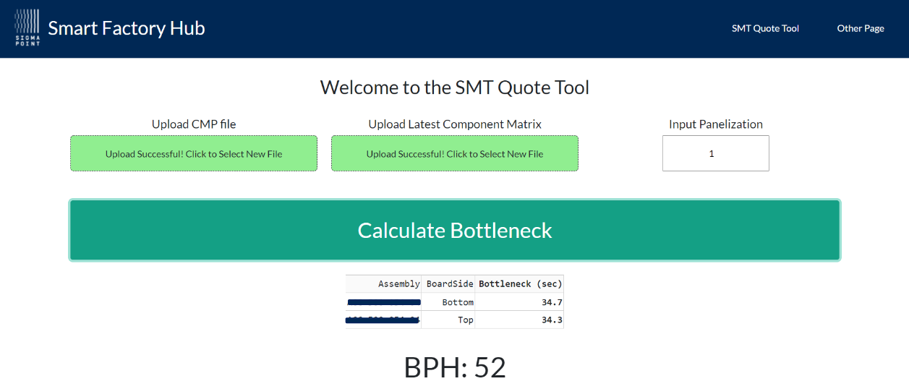

Assembly Line Throughput Predictor
Project Goal: Reduce the time required to generate quotes for new orders at an electronics manufacturing plant.
Background
Quotes are generated to bid on contracts, however the process for generating quotes is labour and time intensive and consequently many potential contracts are lost due to an inability to produce timeley quotes. The quoting process consisted of loading the product's Bill of Materials (BOM) into a software program that optimizes the assembly line configuration to minimize the largest cycle time of the four placement machines (the bottleneck). The bottleneck is then used to calculate the throughput in boards per hour (BPH) which is then used to generate a quote, along with labour and material costs.
The assembly line configuration is shown below and consists of a stencil printer that applies solder paste to the boards, four placement machines which place components onto the boards, and a reflow oven which heats the solder to to fix components in place.

Initialization
The objective of this project was to create a algorithm that can predict the bottleneck time of a new product to replace or supplement the exisiting time-intensive process of generating quotes. The existing process is visualized below.
Solution
Placement machines log files were parsed to obtain the cycle times of previous orders. These cycle times were observed in relation to certain product charactaristics such as the number of components and board size, since larger boards with more components generally have larger cycle times.
A gradient-boosted decision tree algorithm was used in Python to predict cycle times based on several features. The algorthim was deployed on the company's data hub website to make it accessible to workers.
To generate a predction for a product's cycle times, a user uploads csv files of the product's BOM and the latest revision of a component matrix, which contains data on each component. After a few seconds, the program calculates the cycle times, and therefore the bottleneck, and displays the number of boards that would be produced in an hour. The screenshot below shows the program outputting a BPH prediction.
.The algorithm was able to make slightly less accurate predictions than the exsiting process, however it took less than a minute compared to the 6+ hours. This allowed the company produce quotes quickly when backlogged with numerous quote requests.